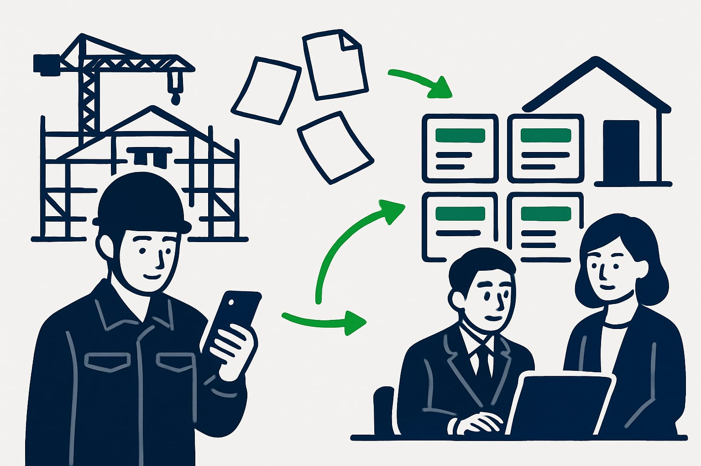
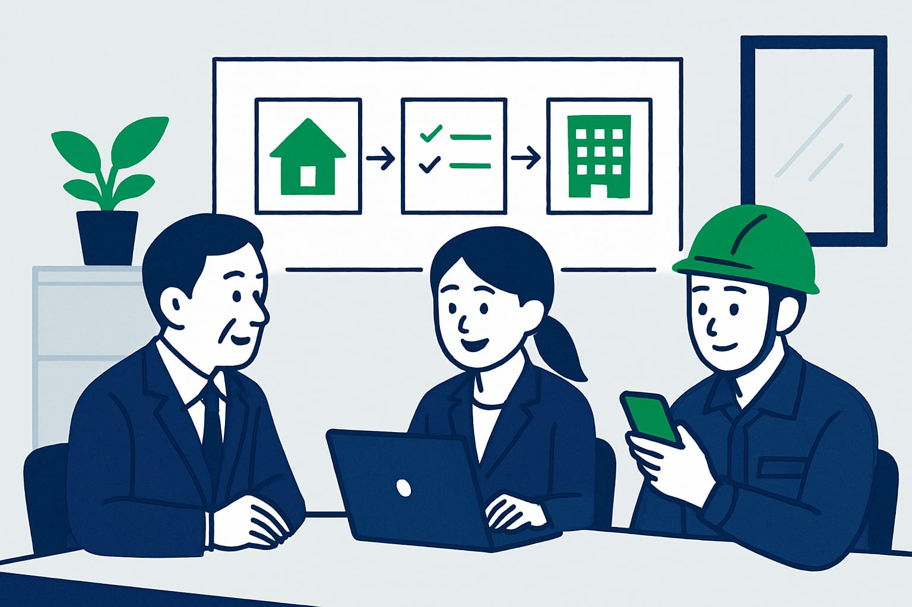

建設業DXの始め方 小さな会社がLINEで始める現場の一歩
建設業でもDXが必要と言われますが、小さな会社ほど何から始めるべきか迷います。2024年問題以降は、残業規制への対応も避けられません。この記事では、大きなシステムではなく、LINEとAIで毎日の打ち直しを減らす現場目線の始め方を解説します。

この記事の要点
- DXは打ち直し削減から始める
- 専任担当者なしでも進められる
- LINEなら現場が使いやすい
- 助成金・補助金も確認する
DXとは、建設業では現場の二度手間を減らすこと

DXは、デジタルトランスフォーメーションの略です。難しく聞こえますが、建設業ではもっと現場の言葉で考えて大丈夫です。
たとえば、現場でメモした内容を、事務所でまたパソコンに打つ。写真を撮ったあと、案件名ごとに探して並べ直す。電話で聞いた見積内容を、別の人がもう一度書き直す。
こうした二度手間を、デジタルで減らすことがDXの入口です。最初から大きな基幹システムを入れる必要はありません。
小さな建設会社のDXは、会社全体を一気に変える話ではありません。まずは、毎日発生している一つの打ち直しを減らすことから始めます。
建設業DXの始め方は、毎日の打ち直しを一つ選ぶ
建設業DXの始め方で大切なのは、最初から全部を変えようとしないことです。紙、電話、FAX、写真フォルダ、表計算ソフトを同時に変えると、現場も事務所も疲れてしまいます。
最初に見る場所は、毎日くり返している作業です。次の条件に当てはまるものを一つ選びます。
- ほぼ毎日発生している
- 現場と事務所の間で同じ内容を打ち直している
- 書き間違いや聞き間違いで戻りがある
- スマホから送れる内容が多い
この条件に合いやすいのが、見積依頼、日報、写真整理、請求確認です。どれも特別なIT知識より、現場の状況をそのまま送れることが大切です。
まず一つだけ減らすと、効果が見えやすくなります。小さな成功が見えると、次の業務にも広げやすくなります。
小さな会社はLINEから始めると現場に嫌がられにくい
小さな会社で新しい画面やアプリを増やすと、現場から使いにくいと言われやすくなります。IDやパスワードを覚えるだけでも、負担になることがあります。
その点、LINEは多くの人が普段から使っています。トークに写真を送る。短いメモを送る。音声入力で状況を残す。こうした動きなら、現場でも始めやすいです。
もちろん、業務で使うならルールは必要です。送る内容、確認する人、保存する場所を決めておくと、あとで探しやすくなります。
LINEで業務改善を始める考え方は、LINE業務改善を建設業で始める方法と見積日報写真の整理でも詳しくまとめています。新しい仕組みを覚えるより、いつもの連絡の中に業務の入口を作ることがポイントです。
最初に減らす事務作業は見積依頼、日報、写真整理、請求確認
最初の一歩に向いている事務作業は、現場で情報が生まれて、事務所で形を整えるものです。ここにLINEとAIシステムを使うと、打ち直しを減らしやすくなります。
| 作業 | よくある困りごと | LINEとAIで変える形 |
|---|---|---|
| 見積依頼 | 電話内容を聞き直す | 写真とメモから確認項目を整理する |
| 日報 | 夜にまとめて書く | 現場メモから下書きを作る |
| 写真整理 | 案件名や場所が分からなくなる | 送信時に案件ごとに分ける |
| 請求確認 | 数量や作業内容を照合する | メモと書類を見比べやすくする |
見積書の作成そのものより前に、見積依頼の情報整理で時間を取られている会社は多いです。見積の打ち直しについては、見積書の打ち直しを減らす、AIの使いどころで詳しく書いています。
日報も同じです。現場で短く送ったメモが、あとで日報の下書きになれば、夜の事務作業を減らせます。流れのイメージは、現場のメモが、日報の下書きになるまでも参考になります。
DX担当者がいない中小企業は、一人で抱えない形にする

小さな建設会社では、DXだけを担当する人を置けないことが普通です。社長、事務担当、現場責任者が日々の仕事をしながら進める形になります。
その場合は、何でもできる人を探すより、窓口を一人だけ決めます。窓口の役割は、困りごとを集めることです。システムを作り込むことではありません。
進め方は、次のくらいで十分です。
- いちばん面倒な打ち直しを一つ書き出す
- その作業で使う写真、メモ、書類を確認する
- LINEで送る形を決める
- AIシステムで下書きや整理を作る
- 人が確認して使う
最初から完璧な流れを作る必要はありません。現場が送れる形にして、事務所が確認しやすくする。これだけでも、DXの第一歩になります。
2024年問題以降は、残業時間より事務の待ち時間を見る
2024年問題以降、建設業でも時間外労働の上限規制への対応が必要になりました。現場の作業時間だけを見ても、残業を減らすには限界があります。
見落とされやすいのが、現場後の事務作業です。事務所に戻ってから日報を書く。写真を探す。見積内容を思い出す。請求の確認で担当者に電話する。
こうした待ち時間や確認時間は、少しずつ残業につながります。しかも、本人は仕事を進めている感覚があるため、ムダとして見えにくいです。
DXで見るべきなのは、誰かが手を止めて待っている時間です。現場から早めに情報が届き、事務所で下書きができていれば、確認は短くなります。残業規制への対応でも、事務作業を減らす視点が重要です。
AIシステムでできることと、任せすぎないこと
AIシステムは、文章を整えたり、写真やメモの内容を整理したりすることが得意です。現場の短いメモから、日報の下書きを作る。見積依頼の内容から、不足している確認項目を出す。こうした使い方に向いています。
一方で、AIに任せきりにしてはいけない部分もあります。金額、数量、宛名、契約条件、工期などは、人が必ず確認します。AIは最終判断をする人の代わりではありません。
また、個人情報、図面、契約書、取引先の情報をどう扱うかも先に決めます。入力してよい情報と避ける情報を分けると、安心して使いやすくなります。
小さな会社ほど、AIを大げさに考えないことが大切です。現場の言葉を、事務所で使える形に整える道具として使うと、無理なく始められます。
助成金・補助金を使うなら、早めに確認する
AIシステムの導入では、IT導入補助金などの補助金を使える場合があります。助成金を含めて、制度に合うかを早めに確認しておくと、導入費用の考え方が変わります。
ただし、金額、率、締切、対象になる内容は年度ごとに変わります。2026年10月18日時点でも、最新の公募要領で確認することが大切です。
制度によっては、申し込み前の契約や支払いが対象外になる場合があります。先に動いてから確認すると、使えたはずの制度を使えないこともあります。
制度ごとに要件があるので、ご相談の際に確認します。小さな会社では、システムの内容と費用だけでなく、使える可能性がある助成金・補助金も一緒に見ることをおすすめします。
DX職人なら、現場のLINEから小さく始められる
DX職人は、建設業や不動産業の現場で使いやすいAIシステムを、いつものLINEのトークから使える形で提供します。新しいアプリや難しい画面を覚えることを前提にしていません。
たとえば、現場から写真と一緒に、外壁補修、午後から雨、明日コーキング予定のように送ります。AIシステムが内容を整理し、日報の下書きや確認事項の形にします。
見積依頼なら、住所、作業内容、写真、希望時期をLINEで送ります。AIが不足している確認項目を出し、事務所で見積に進めやすい状態に整えます。
最初の一歩は、会社全体を変えることではありません。明日の打ち直しを一つ減らすことです。小さな建設会社でも、現場の動きを変えすぎずにDXを始めることはできます。
よくある質問
小さな建設会社でもDXは必要ですか？
必要です。ただし、大きなシステムを入れることがDXではありません。まずは見積依頼、日報、写真整理など、毎日の打ち直しを一つ減らすことから始めるのが現実的です。
DX担当者がいない場合は何から始めればよいですか？
窓口を一人だけ決め、困っている作業を一つ選びます。現場からLINEで写真やメモを送り、AIシステムで下書きや整理を作る流れなら、専任の担当者がいなくても進めやすいです。
建設業のDXはLINEだけで始められますか？
最初の入口としては始められます。写真、メモ、作業内容をLINEで集め、AIシステムで整理する形です。保存方法や確認する人を決めておくと、業務として使いやすくなります。
AIシステムの導入に助成金や補助金は使えますか？
IT導入補助金などの対象になる場合があります。ただし、金額、率、締切、対象内容は年度で変わります。最新の公募要領を確認し、制度ごとの要件は相談時に確認します。
現場が新しいやり方を嫌がるときはどうすればよいですか？
新しいアプリを増やすより、普段使うLINEから始めると負担が少なくなります。最初は一つの作業だけに絞り、送る内容も写真と短いメモ程度にすると受け入れられやすいです。